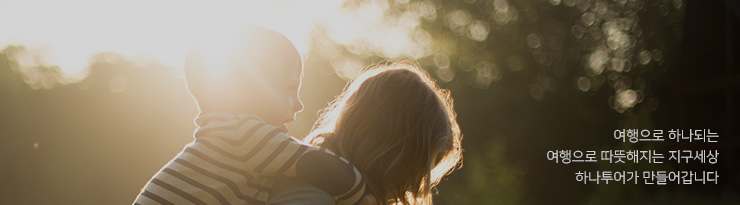
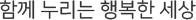
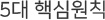

HOME > CSR > 사업개요
사업개요
CSR introduction

- 기업의 사회적 가치를 키우고 희망과 꿈을 나누는 기업, 하나투어
하나투어는 '하나되는 지구세상'이라는 슬로건 아래 업계 최초의 'CSR팀(Corporate Social Responsibility)'을 신설해 사회공헌사업을 활발하게 펼치고 있습니다.
- 
- 여행문화를 선도하는 기업으로서 기업의 사회적 가치를 키우고 꿈과 희망을 나누며 행복하고 지속 가능한 사회를 이룩하는데 기여합니다.
수익의 일부를 적립해 소외 계층에게 꿈과 희망을 전하는 '희망여행 프로젝트', 미래 관광인재를 육성하는 '투어챌린저'와 '투어챌린저 하이스쿨', 다문화 어린이들을 위한 스포츠 꿈나무 양성 프로젝트 '글로벌 프렌즈', 임직원 및 파트너사 직원들로 구성된 '희망봉사단', 고객들을 위한 의미 있는 봉사여행 '볼런투어'등을 운영하며 여행으로 따뜻한 세상을 만드는 데 앞장서고 있습니다.
- 
-
- 인류애경영
- 희망경영
- 환경경영
- 감동경영
- 문화경영